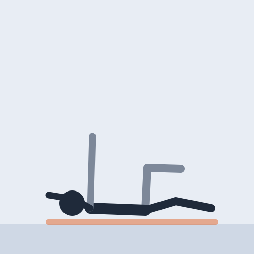
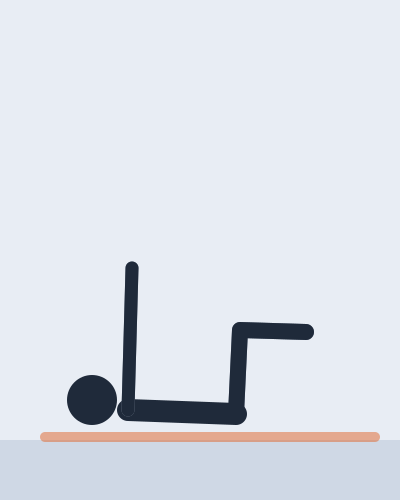
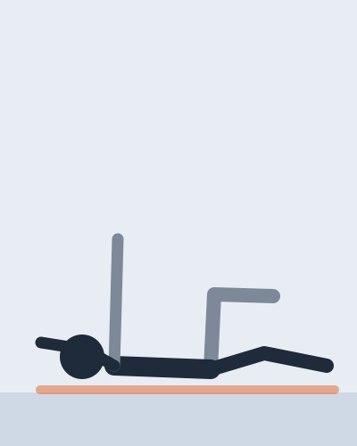
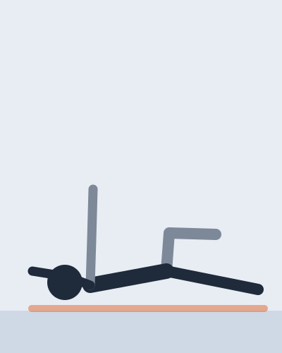

Deep core · 4 min

On the back, arms and legs in the air: one arm and the opposite leg reach out while the lower back stays on the floor.
It teaches the trunk to stay still while the limbs move, which is what it does when you run, lift or carry.
A demo sheet: on yours, this note says what the video actually gives.

1Arms pointing at the ceiling, knees over the hips, shins level.

2One arm goes overhead and the opposite leg goes long, both just above the floor.
Back to the table, then the other arm and the other leg.

The reach is too far. Keep the leg higher, or move the arm only.